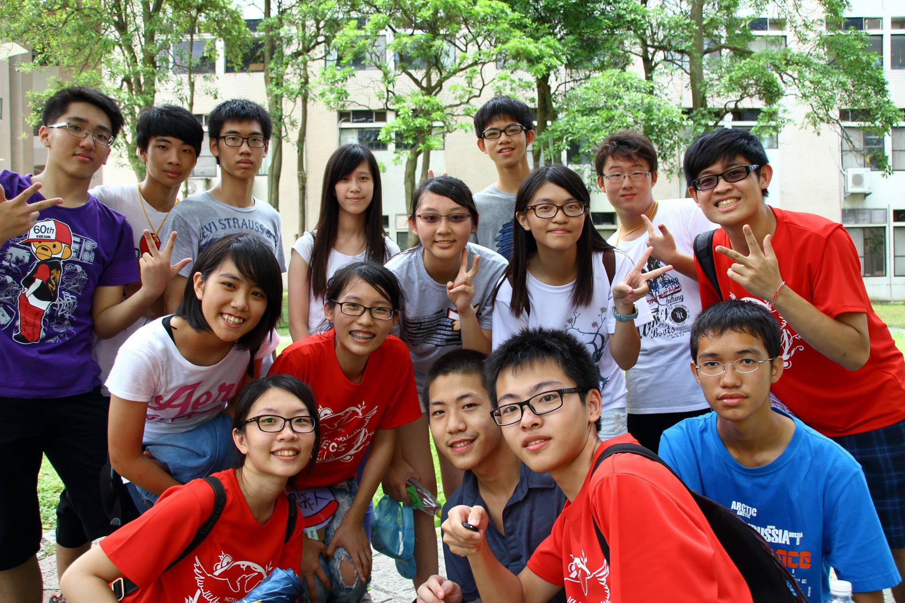

Volunteer Experience
Research Volunteer / San Diego Supercomputer Center (SDSC)
Sep 2017 - Dec 2017
- Researched the topic: “Deep learning on operational facility data related to large-scale distributed area scientific workflows.”
President of the Student Association, EECS Department, National Chiao Tung University
Sep 2013 - Jan 2014
- Organized social events for students in the EECS department.
- Invited professors and industry managers to give talks.
